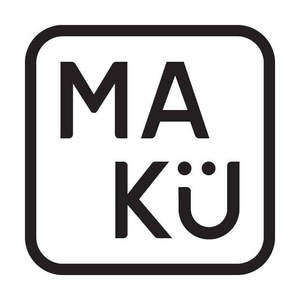

Trade Mark Journal No.2025/014 4 April 2025
UK00004163254 20 February 2025 (18,24,25)

- Class 18
- Leather for shoes; Shoe bags; Leather; Leather and imitations of leather; Leather handbags; Sew-on tags of leather for clothing; Leather purses; Leather straps; Straps (Leather -); Leather bags; Laces (Leather -); Leather laces; Pouches of leather; Tote bags; Duffel bags; Bags; Carry-all bags; Grocery tote bags; Drawstring bags; Cross-body bags; Crossbody bags; Carry-on bags; Sling bags; Toiletry bags; Duffel bags for travel; Shoulder bags; Bucket bags; Luggage bags; Clutch bags; Carrying bags; Cloth bags; Belt bags; Messenger bags; Canvas bags; Garment bags; Mesh shopping bags; Mesh bags for shopping; Leather shopping bags; Canvas shopping bags; Make-up bags; Makeup bags; Hand bags; Reusable shopping bags; Bags [envelopes, pouches] of leather, for packaging; Bags [envelopes, pouches] of leather for packaging; Bum bags; Overnight bags; Courier bags; Leather bags and wallets; Roll bags; String bags for shopping; Shoe bags for travel; Travel bags; Bags for travel; Waist bags; Barrel bags; Gladstone bags; Cosmetic bags; All-purpose carrying bags; Towelling bags; Leather and imitation leather; Leather cloth; Tanned leather; Leather thongs; Leather for furniture; Leather pouches; Leather cord; Leather cords; Leather leashes; Leashes (Leather -); Bands of leather; Handbags made of leather; All-purpose leather straps; Leather boxes; Boxes of leather; Leather twist; Leather cases; Leather luggage straps; Leather thread; Thread (Leather -); Labels of leather; Leather shoulder belts; Belts (Leather shoulder -); Key-cases of leather and skins; Bags made of leather; Furniture coverings of leather; Coverings (Furniture -) of leather; Straps (Leather shoulder -); Leather shoulder straps.
- Class 24
- Woolen blankets; Woollen blankets; Sofa blankets; Blanket throws; Quilted blankets [bedding]; Silk blankets; Cotton blankets; Bed blankets made of cotton; Bed blankets; Blankets (Bed -); Lap blankets; Bed linen and blankets; Picnic blankets; Loden cloth; Knitted fabrics of wool yarn; Woollen fabrics; Travelling rugs [lap robes]; Textile piece goods for making cushion covers; Fabrics made from linen, other than for insulation; Fabrics made from cotton, other than for insulation; Woollen fabrics for use in the manufacture of jackets; Pillow covers; Cushion covers; Covers for cushions; Cushions (Covers for -); Cushion covering materials; Covers for pillows; Sofa covers; Seat covers [loose] for furniture; Bed covers; Table covers; Furniture (Loose covers for -); Covers [loose] for furniture; Loose covers for furniture; Table covers [not of paper]; Bed warmer covers; Textile covers for duvets; Covers for eiderdown and duvets; Jersey [fabric]; Woollen fabric; Wool loop knit fabrics; Jersey fabrics for clothing; Bean bag covers; Mats of linen; Woolen cloth; Jute cloth; Woollen cloth; Lap rugs; Woolen fabric; Travelling rugs; Woven fabrics for sofas; Woven fabrics for cushions; Travellers' rugs; Chenille fabric; Quilt bedding mats; Wool yarn fabrics; Chenile fabric; Silk bed blankets; Woven fabrics for furniture; Furniture coverings of textile; Coverings (Furniture -) of textile; Unfitted fabric furniture covers; Jute fabric; Throws; Bed throws; Throws (furniture coverings); Bedsheets of leather; Textile fabrics for making into blankets; Fabrics made from wool, other than for insulation.
- Class 25
- Sheepskin jackets; Sheepskin coats; Fleece jackets; Fleece vests; Leather slippers; Bootees (woollen baby shoes); Woollen socks; Slippers made of leather; Woolen clothing; Valenki [felted boots]; Leather coats; Suede jackets; Quilted jackets [clothing]; Quilted vests; Leather jackets; Slippers; Slipper socks; Insoles [for shoes and boots]; Insoles for shoes and boots; Shoes; Non-slip socks; Knitted baby shoes; Slip-on shoes; Wooden shoes [footwear]; Sandals; Leather shoes; Flip-flops for use as footwear; Sandals and beach shoes; Russian felted boots (Valenki); Booties; Wooden shoes; Insoles for footwear; Baby boots; Flat shoes; Knitted gloves; Thong sandals; Shoes for leisurewear; Ankle boots; Mittens; Legwarmers; Fingerless gloves as clothing; Esparto shoes or sandals; Esparto shoes or sandles; Men's sandals; Espadrilles; Ladies' sandals; Flip-flops; Pumps [footwear]; Shoes for casual wear; Footwear; Boots; Canvas shoes; Padded jackets; Men's and women's jackets, coats, trousers, vests; Leather clothing; Clothing of leather; Leather (Clothing of -); Leather garments; Jackets; Sleeved jackets; Jackets [clothing]; Leather waistcoats; Knit jackets; Leather dresses; Leather headwear; Reversible jackets; Bomber jackets; Clothing made of leather; Leather suits; Suits of leather; Casual jackets; Gloves; Fingerless gloves; Gloves [clothing]; Gloves as clothing; Gloves for apparel; Winter gloves; Mitts [clothing]; Gloves including those made of skin, hide or fur; Handwarmers [clothing]; Hats; Bobble hats; Cloche hats; Bucket hats; Toques [hats]; Woolly hats; Fashion hats; Sun hats; Beanies; Head wear; Knitted caps; Headgear; Head scarves; Headwear; Bucket caps; Knitted clothing; Vest tops; Gilets; Blouson jackets; Sleeveless jackets; Outerwear; Sleeveless pullovers; Trousers of leather; Fleece tops; Coats of denim; Denim coats; Sleeveless jerseys; Waistcoats [vests]; Waistcoats; Leather belts [clothing]; Belts made of leather; Winter boots; Ladies' boots; Infants' boots; Mukluks; Moccasins; Scarves; Cashmere scarves; Scarfs; Neck scarves; Silk scarves; Snoods [scarves]; Shoulder scarves; Neck scarves [mufflers]; Mufflers [neck scarves]; Mufflers as neck scarves; Neck tube scarves; Neck scarfs [mufflers]; Shawls; Shawls and headscarves; Shawls and stoles; Capelets; Shoulder wraps [clothing]; Shoulder wraps for clothing; Wearable blankets in the nature of blankets with sleeves; Long jackets; Insoles; Shoe soles; Footwear soles; Soles for footwear; Shoes soles for repair; Shoe soles for repair; Footwear uppers; Uppers (Footwear -); Shoe uppers; Slipper soles; Stiffeners for shoes; All aforesaid other than sportswear and sports footwear.
Suzan Aral